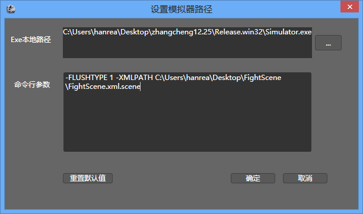

模拟器选择
简介

CocoStudio1.2.0.0版本开始提供模拟器的选择，你可以根据自己的需求选择需要的模拟器。
功能
Exe本地路径
选择模拟器的可执行文件的文件路径。默认为CocoStudio自带的模拟器路径地址。
CocoStudio的模拟器源码已经发布到Github.com平台上，您可以通过修改程序来实现自己的模拟器，添加及修改自己所需要的功能。
命令行参数
传递给模拟器的参数。这个参数包含当前项目的路径信息，用于引导模拟器读取场景数据。
这个参数默认是不需要修改的，但是如果您自定义了自己的模拟器，您可以根据您的模拟器要求来填写此参数。
重置默认值
将“Exe本地路径”和“命令行参数”重置为系统默认值。
Copyright © 2013 CocoStudio.org. All Rights Reserved. 版本v1.2.0.0